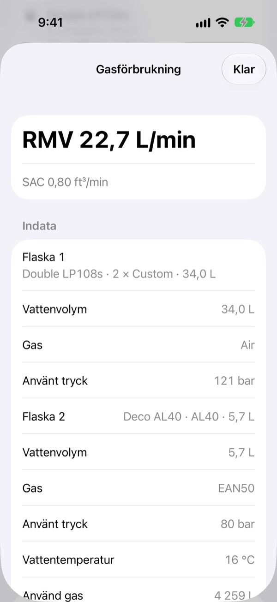

Uppdatera först alla enheter
Många problem försvinner när alla enheter kör den senaste versionen. Öppna TestFlight på varje iPhone, iPad och Mac du använder och installera alla uppdateringar. En äldre version slutar skicka ändringar tills den har uppdaterats, och säger Uppdatera Thermocline för att fortsätta synka. Dina ändringar behålls och skickas efter uppdateringen.
Hämtningar från en dykdator
Datorn hittas inte
- Väck datorn och sätt den i dess Bluetooth-läge (Shearwater: Menu → Bluetooth). Den stannar bara där i ungefär två minuter.
- Håll den nära din iPhone, iPad eller Mac.
- Shearwater-datorer återvänder till den senaste enheten de använde. Om din telefon eller en annan Mac finns i närheten stänger du av Bluetooth på den enheten och försöker sedan igen.
- Kontrollera att Bluetooth är på och att Thermocline får använda det (iPhone: Inställningar → Thermocline; Mac: Systeminställningar → Integritet och säkerhet → Bluetooth).
Det är en Predator eller Petrel 1 och min iPhone ser den inte
De använder äldre Bluetooth (Bluetooth Classic) som iPhone och iPad inte kan använda. Hämta dem på Mac (se guiden), eller importera deras dyk från Shearwater Cloud eller en UDDF-fil.
Den ansluter men ber om en PIN-kod
Skriv in koden som visas på datorns skärm. Den behövs bara första gången.
”Inga nya dyk”
Bara dyk som är nyare än din senaste hämtning hämtas. Om du har raderat ett dyk och vill ha tillbaka det slår du på Hämta alla dyk på datorn och hämtar igen. Dyk som redan finns i din loggbok hoppas över.
Hämtningen stannade halvvägs
Välj Behåll för att spara de dyk som kom fram och hämta sedan igen för resten. Om den fortsätter att stanna väljer du Försök igen nära datorn och skickar hämtningsloggen.
En kabelhämtning misslyckas på Mac
- Kontrollera att porten passar kabeln: listan anger vilken sorts port varje port är och varnar när den inte är avsedd för modellen du valde.
- Koppla ur och koppla in kabeln igen och använd sedan uppdateringsknappen för att leta efter kablar igen.
- Följ stegen i Innan du börjar för din modell.
- Kabelhämtningar är nya. Skicka gärna hämtningsloggen i båda fallen.
Synkning mellan enheter
Min iPhone-app säger att Thermocline nu är en app, eller så ser jag två Thermocline-appar
Den 18 november 2026 blev apparna för iPhone, iPad, Mac och Apple Watch en app, med en beta-länk. iPhone-appen du hade tidigare hjälper dig nu bara att flytta.
- Öppna den gamla appen. Om den säger att synkning är av trycker du på Slå på ”Synka med iCloud” och låter den vara öppen en minut, eller trycker på Exportera min loggbok som UDDF och sparar filen.
- Tryck på Gå med i den nya betan, eller öppna beta-länken på din iPhone, och installera den nya appen. Den ligger bredvid den gamla.
- I den nya appen slår du på Profil → Synka med iCloud. Dina dyk, platser, utrustning och inställningar kommer tillbaka. Om du exporterade i stället använder du Profil → Importera en loggboksfil.
- Du kan behöva parkoppla din dykdator igen och installera Watch-appen igen från appen Watch på din iPhone.
- När den nya appen visar samma dyk raderar du den gamla.
På en Mac ändras ingenting: fortsätt uppdatera Mac-appen som vanligt.
Dyk saknas eller är dubblerade efter en synkning
- Ändra inget ännu. Ta en skärmbild av avsnittet Synkronisering (iPhone: Profil → Synkronisering; Mac: Thermocline → Inställningar → Synkronisering) på varje enhet och skicka den.
- Kontrollera att alla enheter har den senaste versionen.
- Profil → Dina data → Återställningspunkter kan ta din loggbok tillbaka till före en import, sammanslagning eller borttagning. När du återställer sparas din nuvarande loggbok först, så det kan ångras.
En ändring på en enhet syns inte på den andra
- Kontrollera att Synka med iCloud är på på båda, inloggade på samma Apple-konto.
- Titta på Väntar på att skickas på enheten där du gjorde ändringen, och öppna appen på båda med täckning. Avsnittet Synkronisering anger när den här enheten och dina andra stämmer överens.
- Tryck på Synka nu.
”Inte inloggad på iCloud”
Logga in på iCloud i enhetens Inställningar. Tills dess stannar din loggbok på den enheten, i säkerhet, och synkas när du har loggat in.
”Ditt iCloud-lagringsutrymme är fullt”
Din loggbok är säker på enheten och synkas när det finns plats. Frigör lite iCloud-utrymme, eller slå på Spara iCloud-utrymme för dykfoton så att foton inte lagras två gånger.
”En annan enhet använder en nyare version”
Uppdatera Thermocline på den här enheten i TestFlight. Dina ändringar är säkra här och skickas efter uppdateringen.
Importer
Vissa dyk eller detaljer kom inte med
Importrapporten listar allt under Inte importerat och Kontrollera, med orsaken. Varje loggbok skriver UDDF lite olika, så saknade värden är normala och förblir tomma. Om något du väntade dig saknas, skicka rapporten och, om du kan, filen.
Min utrustning, mina foton eller dyktyper från MacDive saknas
MacDives UDDF-export utelämnar dem. Importera dess XML ovanpå för utrustning, taggar och dyktyper, och importera MacDives mapp på Mac för foton. Dyk som redan finns i din loggbok läggs inte till två gånger. Se Vilken MacDive-fil du ska använda.
NDL, ppO₂ eller CNS saknas på dyk från MacDive
Dyksidan visar NDL som ”—” och Deko som ”Inte registrerat”, eller så står det ”Beräknat från gas och djup” vid ppO₂. MacDives UDDF-export innehåller inte datorns NDL, ppO₂ eller CNS. Dess mapp har ingen profil för dyk som MacDive hämtade på en iPhone eller iPad, eftersom den lagrar dem krypterade.
Importera MacDives XML också: den fyller i det som saknas utan att lägga till dyk igen. Se Vilken MacDive-fil du ska använda.
Förlorar jag något när jag flyttar mellan filer eller appar?
- Dina ursprungliga filer ändras aldrig. Spara dina MacDive-exporter, och behåll MacDive tills du har jämfört några dyk.
- En andra import lägger till, den ersätter inte. Dyk som redan finns i din loggbok matchas och får bara det de saknar, så du kan importera XML-filen efter UDDF-filen, eller mappen efter någon av dem.
- Du kan gå tillbaka. En återställningspunkt med namnet Före en import sparas före varje import av mer än ett dyk (Profil → Dina data → Återställningspunkter på iPhone, Inställningar → Återställningspunkter på Mac). På Mac tar även Ångra import… i rapporten tillbaka den.
- Om du lämnar Thermocline: dess UDDF-export är den fullständiga. Den innehåller datorns NDL, ppO₂ och CNS längs varje dyk, utrustning, taggar, dyktyper och videolänkar. Foton finns inte i någon exportfil.
Importerade dyk saknar gas
Filen angav inte vilken gas som användes. De dyken väntar i Att bekräfta så att du kan ange den.
Jag importerade fel fil
På Mac använder du Ångra import… i importrapporten. På båda enheterna sparas en återställningspunkt med namnet Före en import före varje import av mer än ett dyk.
En Garmin-fil går inte att importera
- ”Det är en zip-fil”: Exportera ursprunglig i Garmin Connect ger en .zip-fil. Packa upp den och välj sedan .fit-filen i den.
- ”Det här är ingen Garmin FIT-fil”: filen kommer inte från en Garmin-klocka, eller så slutar bara dess namn på .fit. Använd filen från klockans mapp GARMIN → Activity, eller Exportera ursprunglig.
- ”Garmin-filer innehåller inget dyk”: löprundor, promenader, inställningar och hälsofiler hoppas över. Bara dyk kommer in.
- ”Verkar avbrutna eller skadade”: filen tog slut halvvägs, ofta på grund av en kopiering eller hämtning som inte blev klar. Det som gick att läsa visas; kopiera filen igen från klockan och importera den på nytt för att få resten. Dyk som redan finns i din loggbok hoppas över.
- Att välja en Garmin-fil tillsammans med en annan loggboksfil går inte i ett svep: importera loggboksfilen och sedan Garmin-filerna.
Ett Garmin-dyk ber mig kontrollera dess flaskor
Med mer än en flasksändare anger Garmins fil inte vilken gas varje sändare satt på, så de matchades mot dykets flaskor i ordning. Öppna dykets gasavsnitt och kontrollera att varje tryck ligger på rätt flaska.
Tiden för ett Garmin-dyk är en timme fel
Tiden kommer från klockans tid. Om den inte var inställd på lokal tid där du dök visas dyket med klockans tid. Redigera dykets tid, eller ställ in klockans tidszon före nästa resa.
Ett strömdyk har fel plats
Ett dyk matchas mot den närmaste av platsen där du gick i och platsen där du kom upp, vilket vid ett strömdyk oftast är där du gick i. Om det matchades mot fel plats eller ingen, välj platsen på dyket och lägg till andra vrak du passerade i anteckningarna.
Gasförbrukning och SAC
Ett SAC-värde ser fel ut
Tryck eller klicka på Hur? bredvid det. Det visar varje värde: flaskan och dess vattenvolym, tryck, temperatur, realgaskorrektionen, tid och djup. Den vanligaste orsaken är fel flaskstorlek; rätta den i Utrustning. Skicka en skärmbild av skärmen Hur? om det fortfarande ser fel ut.

Det finns ingen SAC, bara ett meddelande
- Lägg till flaskstorleken för att se SAC: välj flaskans modell eller ange dess storlek.
- Lägg till start- och sluttryck för att se SAC: det finns ingen sändare, så ange dem på flaskan.
- SAC kräver en dykprofil: dyk som loggats för hand utan profil har ingen SAC.
- Rebreatherdyk får inget SAC-värde.
SAC räknar bara en flaska
På ett dyk med flera gaser har bara flaskan med sändaren tryck. Ange start- och sluttryck på den andra flaskan så täcker SAC all gas.
Andning i Sammanfattning säger att inget dyk har en flaskstorlek
Andning räknar bara medelvärde för dyk med en flaskstorlek samt start- och sluttryck. Dyk från MacDives UDDF saknar flaskstorlek, eftersom dess storlekar inte är vattenvolymer; om du importerar XML-filen ovanpå fylls de i (se Vilken MacDive-fil du ska använda). Annars anger du flaskan på dina dyk (välj dess modell, eller ett utrustningsset) och lägger till tryck där du har dem. Under värdet anger Andning hur många dyk som inte räknades.

Foton
Ett foto visas inte på min andra enhet
Med Spara iCloud-utrymme för dykfoton på behåller ett foto sin kopia tills din andra enhet hittar det i iCloud-bilder. Slå på inställningen på båda enheterna, kontrollera att iCloud-bilder är på för båda och ge det tid att laddas upp.
Videor lades inte till
Videor från ditt bibliotek kan bara länkas, inte kopieras. Slå på Synkronisering → Spara iCloud-utrymme för dykfoton och se till att videon finns i iCloud-bilder. Eller klistra in en YouTube- eller Vimeo-länk under dykets foton.
”Thermocline kan inte läsa dina foton”
Åtkomst till Bilder nekades, så foton kopieras i stället för att länkas. För att länka dem tillåter du åtkomst i Inställningar → Integritet och säkerhet → Bilder → Thermocline.
Platser och Apple Watch
Den föreslagna platsen är fel, eller så finns det ingen
Välj en annan plats, sök i de inbyggda listorna efter namn, eller markera eller skriv in positionen själv. Stenbrott och sjöar i inlandet saknas ofta i offentliga listor, så dina egna platser kommer först i förslagen från och med då.
Thermocline finns inte på min Apple Watch
Watch-appen följer med iPhone-appen från TestFlight. Öppna appen Watch på din iPhone, hitta Thermocline under Tillgängliga appar och tryck på Installera. Den kräver watchOS 11 eller senare. Om du flyttade från den gamla iPhone-appen installerar du den igen: den gamla Watch-appen hör till den gamla iPhone-appen.
Klockan säger ”Väntar på en bra fix” och Markera punkt förblir grå
En punkt sparas bara från en fix inom ±30 m och under 30 sekunder gammal, så att en felaktig position aldrig når din loggbok. Stanna vid ytan med klockan ovanför vattnet och fri sikt mot himlen, och ge den en minut. Ignorerar en gammal cachelagrad position betyder att den väntar på en ny. GPS fungerar inte under vattnet: markera punkten innan du går ner eller när du kommer upp till ytan.
”Platsåtkomst är av för Thermocline” på klockan
Öppna Inställningar → Integritet och säkerhet → Platstjänster på klockan, slå på Platstjänster och tillåt Thermocline när appen används.
En punkt som markerats på klockan dök inte upp på min iPhone
Öppna Markeringar på klockan. Väntar på att skickas till iPhone betyder att din iPhone inte har fått den än: håll klockan nära din iPhone och öppna Thermocline på din iPhone. Skickad till iPhone betyder att den finns där: titta i Loggbok → Att bekräfta. Din iPhone slår upp punkten när den är online, så utan täckning väntar den med väntar på signal för att slå upp.
Klockan visade inget platsnamn efter att jag markerat en punkt
Namnet kommer från din iPhone: när den är i närheten och Thermocline kan svara visar klockan platsen den skulle föreslå under punkten, din egen eller en från listorna över dykplatser, med avståndet dit. När din iPhone är utom räckhåll namnger klockan dina egna platser från kopian som din iPhone lämnade på den, men inte listorna över dykplatser. Om ingen plats finns inom ungefär 1,5 km markeras punkten utan namn. I båda fallen väljer du platsen på din iPhone, i Loggbok → Att bekräfta.
Namnet jag sa på klockan sparades inte
Namnet sparas när dikteringen eller tangentbordet stängs, eller när du går tillbaka. Öppna Markeringar, tryck på punkten och kontrollera dess namn; tryck på Ändra namnet för att försöka igen. Om punkten redan har skickats följer namnet med den till din iPhone.
Registrerar klockan mina dyk?
Nej. Thermocline-appen för Watch markerar bara punkter vid ytan. Dina dyk kommer från din dykdator. För Garmin Descent-klockor importerar du deras .fit-filer: se Garmin Descent i guiden.
En punkt försvann från klockan
Det är väntat. En punkt lämnar klockan när den har bekräftats eller slängts på din iPhone. En bekräftad punkt är en plats i din loggbok och synkas till dina andra enheter.
Skicka en rapport eller en hämtningslogg
- Från appen: ta en skärmbild och använd sedan Dela beta-feedback i TestFlight. Den kommer fram med versionen och enheten bifogade.
- Hämtningslogg, iPhone: på hämtningsskärmen trycker du på Hämtningslogg och delar den sedan. Den listar bara Bluetooth- och datormeddelanden, utan dykdata.
- Hämtningslogg, Mac: i hämtningsfönstret väljer du Hämtningslogg… och sedan Spara logg…, och bifogar filen.
- E-post: brian@616labs.net, med din enhet, versionsnumret (visas i TestFlight) och vad du förväntade dig skulle hända.